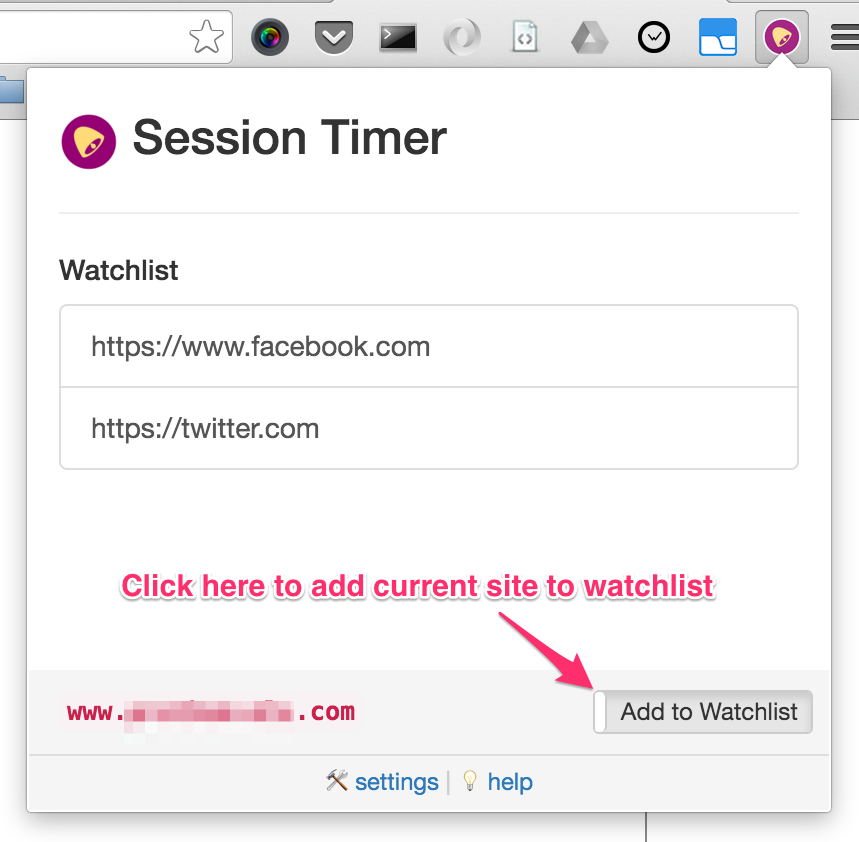

How to use
How to use
This extension will rescue your time by notifying you after customizable time limit while browsing time killing sites.
How to use?
Step 1: Add sites to watchlist.
When you are on a time killing website, click on the extension icon.
Then turn on watching by clicking the toggle button at bottom of popup window.
The site will immediately appear in watchlist (and timer will be activated behind the scene).

Extension popup window
Step 2: Get Notified!
A notification will be displayed with a light, short alarm sound when your time for browsing
a watch-listed site is over. In that notification, you'll have 2 buttons to choose -
- - Snooze : Reset alarm at a few minutes later.
- - Close Tabs : Will close all open tabs with that (notifying about) site.

Extension notification window
Step 3: Configure time limits (OPTIONAL).
By default, first notification will be displayed after 10 minutes of started browsing a listed site.
And, if you choose to Snooze in notification, the alarm will reset at 2 minutes. But you can change these time limits
from Settings page. You'll get the following options there to configure -
- - Session Limit : The time of showing first Notification (in minutes).
- - Snooze Time : When to set next alarm if "Snoozed" (in minutes).
That's All!
Tweet to @ajaxray
for any query, suggestion or just if it helped you anyway :)